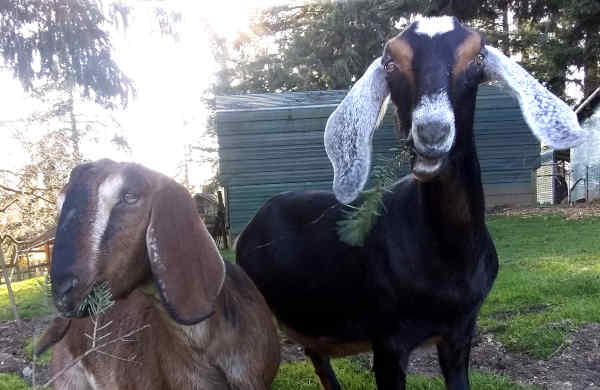
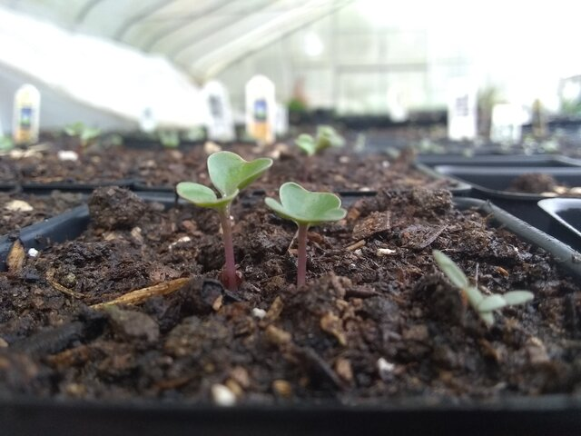

9402 Rich Road SE Olympia WA 98501
3.5 miles south of Olympia Airport on Old Highway 99 to Rich Road
We’re Open All Year
Monday to Saturday, 9 am to 5:30 pm
Our store remains open!
June through December
Monday to Saturday, 9 am to 5:30 pm
…and Sundays, 9 am to 4 pm
We sold our last Rhode Island Blue. The remaining chicks are Partidge and Barred Rock. They will all grow into brown-egg laying hens.
Runner & Muscovy Ducklings, and Guinea Fowl Keets are for sale in the Animal Building. They are growing quickly.

Selene and Calypso are two very adorable and friendly Nubian goats who always want attention. Be careful, they stand on the fence and reach their necks out!

We’ve been busy planting flowers and vegetables since the beginning of March.
We have about two cords of dry firewood for sale. $350, you haul. Please pay cashier first.
Please call the store, (360) 491-7328, and let us know what you want and when you want it.
Our small family owned farm has been in business since 1976 and we work year around to bring you the highest quality fruits and vegetables. Our products are all homemade from natural ingredients – just like your grandmother used to make!
We invite you to bring your family & friends, wander around our flower and vegetable gardens, picnic, and feed the animals. Kids will enjoy our play area including a maze that’s open all year. While you’re here, be sure to visit our farm’s store!
All year long you can buy our award-winning apple cider, Eastern Washington Fruit, farm fresh eggs, fruit syrups, dried fruit, honey, jam, smoked salmon, Johnson’s Smokehouse meat & cheese products, crisp apples, and delicious frozen ready-to-bake pies. Look for fresh seasonal fruit and produce. Try our many assorted baked-fresh-daily pastries & donuts, and hot and cold ciders! And stop by on Thursday & Friday before noon or Saturday & Sunday for great tasting apple fritters!
Join us for special events throughout the year. Kids love our Easter Egg Hunt! Our fall Apple Festival features tractor-drawn wagon rides to our Pumpkin Patch, the Maze, and wonderful food & drinks. We transform our farm into a Winter Wonderland in December with thousands of lights.
We look forward to seeing you soon!
👩👧👧
Carolyn Lattin and daughters, Debbie & Sherrie